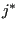

Next: Homogeneous linear equations Up: Reading the step input Previous: Reading the step input Contents
The first one is the cataloguing algorithm for SPC's (single point constraints, *BOUNDARY). Let's say a boundary condition m is defined for node i in direction . According to the input deck rules can take the following values:
The value is first mapped onto  using except for:
using except for:
Since static pressure is only used for fluids, rotations only for structures, and the electric potential only for electromagnetic calculations the triple use of dof 4 is no problem: it is not possible that a pressure and a rotation is applied in the same node. The same applies to the other degrees of freedom. For instance,j=2 can be a displacement (in global y-direction) in a structural node, a total pressure in a network node or a velocity (in global y-direction) in a CFD-calculation.
Then, a degree of
freedom
idof is assigned to this boundary condition. Subsequently, it is
stored at location k in the one-dimensional field ikboun, where all previous boundary
degrees of freedom are stored in numerical order such that
ikbounidof ikboun. Furthermore the number of the boundary
condition (m) is stored in ilboun:
ilboun(k)=m, and the node of the boundary
condition, its direction and value are stored in the one-dimensional fields
nodeboun, ndirboun and xboun:
nodeboun,
ndirboun and
xbounvalue. If an amplitude definition applies to
the boundary condition, its number
ikboun. Furthermore the number of the boundary
condition (m) is stored in ilboun:
ilboun(k)=m, and the node of the boundary
condition, its direction and value are stored in the one-dimensional fields
nodeboun, ndirboun and xboun:
nodeboun,
ndirboun and
xbounvalue. If an amplitude definition applies to
the boundary condition, its number  is stored in the one-dimensional field
iamboun:
iamboun.
is stored in the one-dimensional field
iamboun:
iamboun.
The SPC type is stored in the one-dimensional field typeboun. SPC's can be of different types, depending on whether the were defined by a genuin *BOUNDARY CARD, or introduced for other reasons. The field typeboun is a one-dimensional character*1 field. Other reasons to introduce SPC's are:
The corresponding type code is:
The total number of boundary conditions is stored in variable nboun.
Consequently, ikboun contains all degrees of freedom of the boundary conditions in numerical order, and ilboun contains the corresponding boundary condition numbers. This assures that one can quickly check whether a given degree of freedom was used in a SPC. For example, if the SPC's look like:
*BOUNDARY 8,1,1,0. 10,1,2,0. 7,3,3,-1.
the fields look like:
| nodeboun ndirboun xboun | (663) |
| typeboun ikboun ilboun | (664) |
and nboun=4.
Finally, the following one-dimensional fields are also used:
Notice that among the boundary conditions SPC's are somewhat special. They are sometimes called geometric boundary conditions to distinguish them from the natural boundary conditions such as the application of a concentrated or distributed load. To remove a natural boundary condition, just set it to zero. This is not true for geometric boundary conditions: by setting a SPC to zero, the corresponding node is fixed in space which usually does not correspond to what one understands by removing the SPC, i.e. free unconstrained motion of the node. Therefore, to remove a SPC the option OP=NEW must be specified on the *BOUNDARY keyword card. This removes ALL SPC constraints. Then, the constraints which the user does not wish to remove must be redefined. Depending on the procedure (*STATIC, *DYNAMIC...), the change of SPC's is applied in a linear way. This means that the old SPC information must be kept to establish this linear change. That's why the fields nodebounold and ndirbounold are introduced. The relationship between the old and new SPC's is established in subroutine spcmatch, called from ccx_2.19.c.